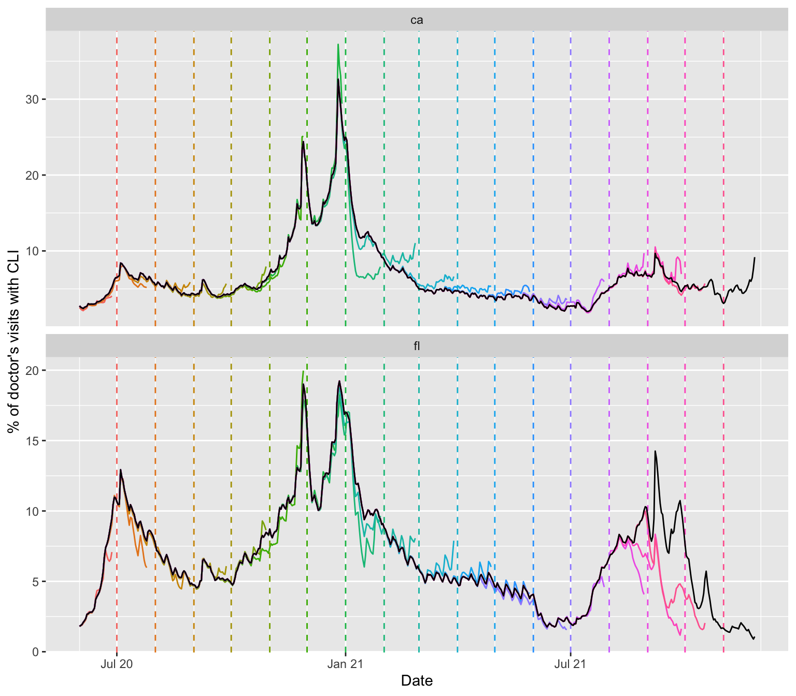
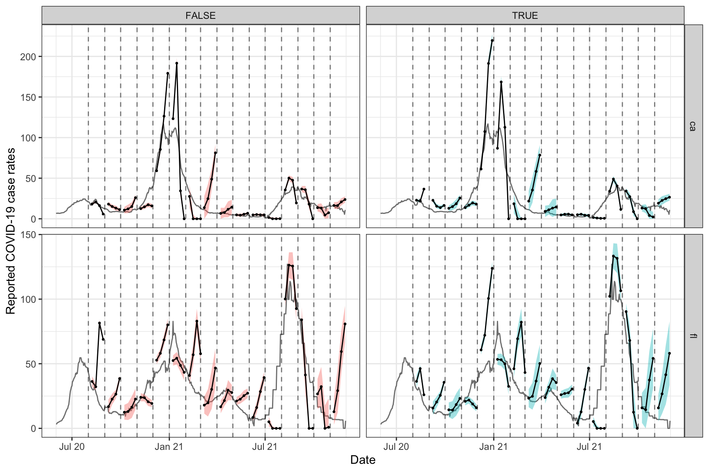

In addition to the epi_df data structure, which we have been working with all along in these vignettes, the epiprocess package has a companion structure called epi_archive. In comparison to an epi_df object, which can be seen as storing a single snapshot of a data set with the most up-to-date signal values as of some given time, an epi_archive object stores the full version history of a data set. Many signals of interest for epidemiological tracking are subject to revision (some more than others), and paying attention to data revisions can be important for all sorts of downstream data analysis and modeling tasks.
This vignette walks through working with epi_archive objects and demonstrates some of their key functionality. We’ll work with a signal on the percentage of doctor’s visits with CLI (COVID-like illness) computed from medical insurance claims, available through the COVIDcast API. This signal is subject to very heavy and regular revision; you can read more about it on its API documentation page.
library(covidcast) library(epiprocess) library(data.table) library(dplyr) dv <- covidcast_signal("doctor-visits", "smoothed_adj_cli", start_day = "2020-06-01", end_day = "2021-12-01", issues = c("2020-06-01", "2021-12-01"), geo_type = "state", geo_values = c("ca", "fl"))
## Warning: Data not fetched for the following days: 2021-11-27, 2021-11-28,
## 2021-11-29, 2021-11-30, 2021-12-01colnames(dv)
## [1] "data_source" "signal" "geo_value"
## [4] "time_value" "source" "geo_type"
## [7] "time_type" "issue" "lag"
## [10] "missing_value" "missing_stderr" "missing_sample_size"
## [13] "value" "stderr" "sample_size"epi_archive formatAn epi_archive object can be constructed from a data frame, data table, or tibble, provided that it has (at least) the following columns:
geo_value: the geographic value associated with each row of measurements.time_value: the time value associated with each row of measurements.version: the time value specifying the version for each row of measurements. For example, if in a given row the version is January 15, 2022 and time_value is January 14, 2022, then this row contains the measurements of the data for January 14, 2022 that were available one day later.As we can see from the above, the data frame returned by covidcast::covidcast_signal() has the columns required for the epi_archive format, with issue playing the role of version. We can now use as_epi_archive() to bring it into epi_archive format.
x <- dv %>% select(geo_value, time_value, version = issue, percent_cli = value) %>% as_epi_archive() class(x)
## [1] "epi_archive" "R6"print(x)
## An `epi_archive` object, with metadata:
## * geo_type = state
## * time_type = day
## ----------
## * min time value = 2020-06-01
## * max time value = 2021-11-26
## * min version = 2020-06-06
## * max version = 2021-11-29
## ----------
## Data archive (stored in DT field): 58574 x 4
## ----------
## Public methods: initialize, print, as_of, merge, slide, cloneAn epi_archive is special kind of class called an R6 class. Its primary field is a data table DT, which is of class data.table (from the data.table package), and has columns geo_value, time_value, version, as well as any number of additional columns.
class(x$DT)
## [1] "data.table" "data.frame"head(x$DT)
## geo_value time_value version percent_cli
## 1: ca 2020-06-01 2020-06-06 2.140116
## 2: ca 2020-06-01 2020-06-07 2.140116
## 3: ca 2020-06-01 2020-06-08 2.140379
## 4: ca 2020-06-01 2020-06-09 2.114430
## 5: ca 2020-06-01 2020-06-10 2.133677
## 6: ca 2020-06-01 2020-06-11 2.197207The variables geo_value, time_value, version serve as key variables for the data table, as well as any other specified in the metadata (described below). There can only be a single row per unique combination of key variables, and therefore the key variables are critical for figuring out how to generate a snapshot of data from the archive, as of a given version (also described below).
key(x$DT)
## [1] "geo_value" "time_value" "version"In general, last observation carried forward (LOCF) is used to data in between recorded versions. A word of caution: R6 objects, unlike most other objects in R, have reference semantics. An important consequence of this is that objects are not copied when modified.
original_value <- x$DT$percent_cli[1] y <- x # This DOES NOT make a copy of x y$DT$percent_cli[1] = 0 head(y$DT)
## geo_value time_value version percent_cli
## 1: ca 2020-06-01 2020-06-06 0.000000
## 2: ca 2020-06-01 2020-06-07 2.140116
## 3: ca 2020-06-01 2020-06-08 2.140379
## 4: ca 2020-06-01 2020-06-09 2.114430
## 5: ca 2020-06-01 2020-06-10 2.133677
## 6: ca 2020-06-01 2020-06-11 2.197207head(x$DT)
## geo_value time_value version percent_cli
## 1: ca 2020-06-01 2020-06-06 0.000000
## 2: ca 2020-06-01 2020-06-07 2.140116
## 3: ca 2020-06-01 2020-06-08 2.140379
## 4: ca 2020-06-01 2020-06-09 2.114430
## 5: ca 2020-06-01 2020-06-10 2.133677
## 6: ca 2020-06-01 2020-06-11 2.197207x$DT$percent_cli[1] <- original_value
To make a copy, we can use the clone() method for an R6 class, as in y <- x$clone(). You can read more about reference semantics in Hadley Wickham’s Advanced R book.
The following pieces of metadata are included as fields in an epi_archive object:
geo_type: the type for the geo values.time_type: the type for the time values.additional_metadata: list of additional metadata for the data archive.Metadata for an epi_archive object x can be accessed (and altered) directly, as in x$geo_type or x$time_type, etc. Just like as_epi_df(), the function as_epi_archive() attempts to guess metadata fields when an epi_archive object is instantiated, if they are not explicitly specified in the function call (as it did in the case above).
epi_df formA key method of an epi_archive class is as_of(), which generates a snapshot of the archive in epi_df format. This represents the most up-to-date values of the signal variables as of a given version. This can be accessed via x$as_of() for an epi_archive object x, but the package also provides a simple wrapper function epix_as_of() since this is likely a more familiar interface for users not familiar with R6 (or object-oriented programming).
x_snapshot <- epix_as_of(x, max_version = as.Date("2021-06-01")) class(x_snapshot)
## [1] "epi_df" "tbl_df" "tbl" "data.frame"head(x_snapshot)
## # A tibble: 6 × 3
## geo_value time_value percent_cli
## <chr> <date> <dbl>
## 1 ca 2020-06-01 2.75
## 2 ca 2020-06-02 2.57
## 3 ca 2020-06-03 2.48
## 4 ca 2020-06-04 2.41
## 5 ca 2020-06-05 2.57
## 6 ca 2020-06-06 2.63max(x_snapshot$time_value)
## [1] "2021-05-29"attributes(x_snapshot)$metadata$as_of
## [1] "2021-06-01"We can see that the max time value in the epi_df object x_snapshot that was generated from the archive is May 29, 2021, even though the specified version date was June 1, 2021. From this we can infer that the doctor’s visits signal was 2 days latent on June 1. Also, we can see that the metadata in the epi_df object has the version date recorded in the as_of field.
Using the maximum of the version column in the underlying data table in an epi_archive object itself generates a snapshot of the latest values of signal variables in the entire archive. The epix_as_of() function issues a warning in this case, since updates to the current version may still come in at a later point in time, due to various reasons, such as synchronization issues.
x_latest <- epix_as_of(x, max_version = max(x$DT$version))
## Warning: Getting data as of the latest version possible. For a variety of
## reasons, it is possible that we only have a preliminary picture of this version
## (e.g., the upstream source has updated it but we have not seen it due to latency
## in synchronization). Thus, the snapshot that we produce here might not be
## reproducible at a later time (e.g., when the archive has caught up in terms of
## synchronization).Below, we pull several snapshots from the archive, spaced one month apart. We overlay the corresponding signal curves as colored lines, with the version dates marked by dotted vertical lines, and draw the latest curve in black (from the latest snapshot x_latest that the archive can provide).
library(purrr)
##
## Attaching package: 'purrr'## The following object is masked from 'package:data.table':
##
## transposelibrary(ggplot2) theme_set(theme_bw()) self_max = max(x$DT$version) versions = seq(as.Date("2020-06-01"), self_max - 1, by = "1 month") snapshots <- map_dfr(versions, function(v) { epix_as_of(x, max_version = v) %>% mutate(version = v) }) %>% bind_rows(x_latest %>% mutate(version = self_max)) %>% mutate(latest = version == self_max) p <- ggplot(snapshots %>% filter(!latest), aes(x = time_value, y = percent_cli)) + geom_line(aes(color = factor(version))) + geom_vline(aes(color = factor(version), xintercept = version), lty = 2) + facet_wrap(~ geo_value, scales = "free_y", ncol = 1) + scale_x_date(minor_breaks = "month", date_labels = "%b %y") + labs(x = "Date", y = "% of doctor's visits with CLI") + theme(legend.position = "none") gginnards::append_layers( p, geom_line(data = snapshots %>% filter(latest), aes(x = time_value, y = percent_cli), inherit.aes = FALSE, color = "black"), pos = "top")

We can see some interesting and highly nontrivial revision behavior: at some points in time the provisional data snapshots grossly underestimate the latest curve (look in particular at Florida close to the end of 2021), and at others they overestimate it (both states towards the beginning of 2021), though not quite as dramatically. Modeling the revision process, which is often called backfill modeling, is an important statistical problem in it of itself.
epi_archive objectsNow we demonstrate how to merge the underlying data tables in two epi_archive objects together. The epi_archive class provides a method merge() precisely for this purpose. The wrapper function is called epix_merge(); as before, this is just offered as a matter of convenience/familiarity for some users. Below we merge the working epi_archive of versioned percentage CLI from outpatient visits to another one of versioned COVID-19 case reporting data, which we fetch the from the COVIDcast API, on the rate scale (counts per 100,000 people in the population).
When merging archives, we typically want to perform a full join, otherwise we will be throwing out versioned data from one table or the other. This is accomplished by setting all = TRUE in the call to epix_merge(). Furthermore, this function provides an option for filling NA values via LOCF by setting locf = TRUE. In general, unless two data tables have the exact same pattern of updates, we will get NA values in the signals after performing a full join. Because the original data archives are stored in LOCF (last observation carried forward) format in the first place, it generally makes sense to perform NA filling after merging using LOCF. Therefore locf = TRUE is the default.
y <- covidcast_signal("jhu-csse", "confirmed_7dav_incidence_prop", start_day = "2020-06-01", end_day = "2021-12-01", issues = c("2020-06-01", "2021-12-01"), geo_type = "state", geo_values = c("ca", "fl")) %>% select(geo_value, time_value, version = issue, case_rates = value) %>% as_epi_archive()
## Fetched day 2020-06-01 to 2021-12-01: num_entries = 12105## Warning: Data not fetched for the following days: 2021-12-01epix_merge(x, y, all = TRUE) print(x)
## An `epi_archive` object, with metadata:
## * geo_type = state
## * time_type = day
## ----------
## * min time value = 2020-06-01
## * max time value = 2021-11-30
## * min version = 2020-06-02
## * max version = 2021-12-01
## ----------
## Data archive (stored in DT field): 66221 x 5
## ----------
## Public methods: initialize, print, as_of, merge, slide, clonehead(x$DT)
## geo_value time_value version percent_cli case_rates
## 1: ca 2020-06-01 2020-06-02 NA 6.628329
## 2: ca 2020-06-01 2020-06-06 2.140116 6.628329
## 3: ca 2020-06-01 2020-06-07 2.140116 6.628329
## 4: ca 2020-06-01 2020-06-08 2.140379 6.628329
## 5: ca 2020-06-01 2020-06-09 2.114430 6.628329
## 6: ca 2020-06-01 2020-06-10 2.133677 6.628329Importantly, as we can see, the way epix_merge() works is that it overwrites the data table in the first epi_archive object x by the merged data table.
Lastly, we demonstrate another key method of the epi_archive class, which is the slide() method. It works just like epi_slide() does for an epi_df object, but with one key difference: it performs version-aware computations. That is, for the computation at any given reference time t, it only uses data that would have been available as of t. The wrapper function is called epix_slide(); again, this is just for convenience/familiarity—and its interface is purposely designed mirror that of epi_slide() for epi_df objects.
For the demonstration, we’ll revisit the forecasting example from the slide vignette, and now we’ll build a forecaster that uses properly-versioned data (that would have been available in real-time) to forecast future COVID-19 case rates from current and past COVID-19 case rates, as well as current and past values of the outpatient CLI signal from medical claims. We’ll extend the prob_ar() function from the slide vignette to accomodate exogenous variables in the autoregressive model, which is often referred to as an ARX model.
prob_arx <- function(x, y, lags = c(0, 7, 14), ahead = 7, min_train_window = 20, lower_level = 0.05, upper_level = 0.95, symmetrize = TRUE, nonneg = TRUE) { # Return NA if insufficient training data if (length(y) < min_train_window + max(lags) + ahead) { return(data.frame(point = NA, lower = NA, upper = NA)) } # Useful transformations if (!missing(x)) x <- data.frame(x, y) else x <- data.frame(y) if (!is.list(lags)) lags <- list(lags) lags = rep(lags, length.out = ncol(x)) # Build features and response for the AR model, and then fit it dat <- do.call( data.frame, unlist( # Below we loop through and build the lagged features purrr::map(1:ncol(x), function(i) { purrr::map(lags[[i]], function(lag) dplyr::lag(x[,i], n = lag)) }), recursive = FALSE ) ) dat$y <- dplyr::lead(y, n = ahead) obj <- lm(y ~ ., data = dat) # Use LOCF to fill NAs in the latest feature values, make a prediction data.table::setnafill(dat, type = "locf") point <- predict(obj, newdata = tail(dat, 1)) # Compute a band r <- residuals(obj) s <- ifelse(symmetrize, -1, NA) # Should the residuals be symmetrized? q <- quantile(c(r, s * r), probs = c(lower_level, upper_level), na.rm = TRUE) lower <- point + q[1] upper <- point + q[2] # Clip at zero if we need to, then return if (nonneg) { point = max(point, 0) lower = max(lower, 0) upper = max(upper, 0) } return(data.frame(point = point, lower = lower, upper = upper)) }
Next we slide this forecaster over the working epi_archive object, in order to forecast COVID-19 case rates 7 days into the future.
fc_time_values = seq(as.Date("2020-08-01"), as.Date("2021-12-01"), by = "1 month") z <- epix_slide(x, fc = prob_arx(x = percent_cli, y = case_rates), n = 120, ref_time_values = fc_time_values, group_by = geo_value) head(z, 10)
## # A tibble: 10 × 5
## geo_value time_value fc_point fc_lower fc_upper
## <chr> <date> <dbl> <dbl> <dbl>
## 1 ca 2020-08-01 22.9 21.4 24.3
## 2 fl 2020-08-01 36.3 31.4 41.3
## 3 ca 2020-09-01 22.7 20.0 25.5
## 4 fl 2020-09-01 15.7 10.5 20.9
## 5 ca 2020-10-01 12.9 9.47 16.3
## 6 fl 2020-10-01 14.3 8.61 20.1
## 7 ca 2020-11-01 13.7 11.3 16.2
## 8 fl 2020-11-01 20.9 17.7 24.1
## 9 ca 2020-12-01 61.3 58.3 64.3
## 10 fl 2020-12-01 60.7 57.0 64.3We get back a tibble z with the grouping variables (here geo value), the time values, and three columns fc_point, fc_lower, and fc_upper produced by the slide computation that correspond to the point forecast, and the lower and upper endpoints of the 95% prediction band, respectively. (If instead we had set as_list_col = TRUE in the call to epix_slide(), then we would have gotten a list column fc, where each element of fc is a data frame with named columns point, lower, and upper.)
On the whole, epix_slide() works similarly to epix_slide(), though there are a few notable differences, even apart from the version-aware aspect. You can read the documentation for epix_slide() for details.
We finish off by comparing version-aware and version-unaware forecasts at various points in time and forecast horizons. The former will come from applying epix_slide() to the epi_archive object x, and the latter from applying epi_slide() to the latest snapshot of the data x_latest.
x_latest = epix_as_of(x, max_version = max(x$DT$version)) k_week_ahead <- function(x, ahead = 7, as_of = TRUE) { if (as_of) { x %>% epix_slide(fc = prob_arx(percent_cli, case_rates, ahead = ahead), n = 120, ref_time_values = fc_time_values, group_by = geo_value) %>% mutate(target_date = time_value + ahead, as_of = TRUE) } else { x_latest %>% group_by(geo_value) %>% epi_slide(fc = prob_arx(percent_cli, case_rates, ahead = ahead), n = 120, ref_time_values = fc_time_values) %>% mutate(target_date = time_value + ahead, as_of = FALSE) } } # First generate the forecasts, and bind them together fc <- bind_rows(k_week_ahead(x, ahead = 7, as_of = TRUE), k_week_ahead(x, ahead = 14, as_of = TRUE), k_week_ahead(x, ahead = 21, as_of = TRUE), k_week_ahead(x, ahead = 28, as_of = TRUE), k_week_ahead(x, ahead = 7, as_of = FALSE), k_week_ahead(x, ahead = 14, as_of = FALSE), k_week_ahead(x, ahead = 21, as_of = FALSE), k_week_ahead(x, ahead = 28, as_of = FALSE)) # Now plot them, on top of latest COVID-19 case counts p <- ggplot(fc, aes(x = target_date, group = time_value, fill = as_of)) + geom_ribbon(aes(ymin = fc_lower, ymax = fc_upper), alpha = 0.4) + geom_line(aes(y = fc_point)) + geom_point(aes(y = fc_point), size = 0.5) + geom_vline(aes(xintercept = time_value), linetype = 2, alpha = 0.5) + facet_grid(vars(geo_value), vars(as_of), scales = "free") + scale_x_date(minor_breaks = "month", date_labels = "%b %y") + labs(x = "Date", y = "Reported COVID-19 case rates") + theme(legend.position = "none") gginnards::append_layers( p, geom_line(data = x_latest, aes(x = time_value, y = case_rates), inherit.aes = FALSE, color = "gray50"), pos = "bottom")

Each row displays the forecasts for a different location (CA and FL), and each column corresponds to whether properly-versioned data is used (FALSE means no, and TRUE means yes). We can see that the properly-versioned forecaster is, at some points in time, more problematic; for example, it massively overpredicts the peak in both locations in winter wave of 2020. However, performance is pretty poor across the board here, whether or not properly-versioned data is used. Similar to what we saw in the slide vignette, the ARX forecasts can too volatile, overconfident, or both.
Some of the volatility can be attenuated here by training an ARX model jointly over locations; the advanced sliding vignette gives a demonstration of how to do this. But really, the epipredict package, which builds off the data structures and functionality in the current package, is the place to look for more robust forecasting methodology. The forecasters that appear in the vignettes in the current package are only meant to demo the slide functionality with some of the most basic forecasting methodology possible.